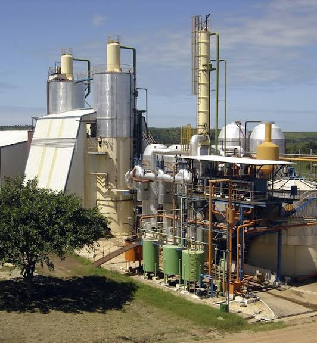

A cooperativa nasceu da união de pequenos produtores da região, que decidiram trabalhar juntos opara fortalecer a produção do local.
Sozinhos vamos mais rápido, jumtos vamos mais longe.
Página produzida na aula de programação web- Semana 1.